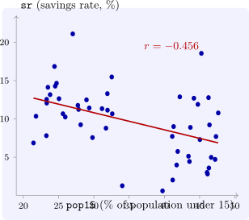

1.3 Describing a bivariate relationship
Before any model is fitted, the relation between two variables is described by its scatter plot and by summary statistics. Given \(n\) pairs \((X_i, Y_i)\), the sample variances and covariance are \[ s_X^2 = \frac {1}{n-1}\sum x_i^2, \qquad s_Y^2 = \frac {1}{n-1}\sum y_i^2, \qquad s_{XY} = \frac {1}{n-1}\sum x_i y_i . \] The covariance has the units of \(X\) times \(Y\), so its size means nothing on its own. Dividing by the standard deviations removes the units.
Definition 1.3.1. The sample correlation coefficient of \(X\) and \(Y\) is \[ r = \frac {s_{XY}}{s_X s_Y} = \frac {\sum x_i y_i}{\sqrt {\sum x_i^2}\sqrt {\sum y_i^2}} . \]
Theorem 1.3.2. For any real numbers \(x_1, \dots , x_n\) and \(y_1, \dots , y_n\), \begin {equation} \label {eq:cs} \Bigl (\sum x_i y_i\Bigr )^2 \leq \sum x_i^2 \sum y_i^2 , \end {equation} with equality if and only if one sequence is a multiple of the other. Consequently \(-1 \leq r \leq 1\), and \(|r| = 1\) if and only if the points \((X_i, Y_i)\) lie exactly on a straight line.
Proof. If every \(x_i = 0\) both sides of (1.2) are zero. Otherwise \(\sum x_i^2 > 0\) and, for every real \(\lambda \), \[ 0 \leq \sum (y_i - \lambda x_i)^2 = \sum y_i^2 - 2\lambda \sum x_i y_i + \lambda ^2 \sum x_i^2 . \] A quadratic in \(\lambda \) with positive leading coefficient that is never negative has at most one real root, so its discriminant is not positive: \[ 4\Bigl (\sum x_i y_i\Bigr )^2 - 4 \sum x_i^2 \sum y_i^2 \leq 0 , \] which is (1.2). Equality holds exactly when the quadratic has a real root \(\lambda _0\), that is when \(\sum (y_i - \lambda _0 x_i)^2 = 0\), which forces \(y_i = \lambda _0 x_i\) for every \(i\).
Dividing (1.2) by \(\sum x_i^2 \sum y_i^2\) gives \(r^2 \leq 1\). Equality means \(Y_i - \bar Y = \lambda _0 (X_i - \bar X)\) for all \(i\), a straight line through \((\bar X, \bar Y)\) with slope \(\lambda _0\), and then \(r\) has the sign of \(\lambda _0\). □
Corollary 1.3.3. The quantity \(\sum x_i^2 \sum y_i^2 - \bigl (\sum x_i y_i\bigr )^2\) can never be negative. It is zero only when the data lie exactly on a line.
This corollary settles a question that appears regularly in examinations: a claim that \(\sum (X - \bar X)^2 \sum (Y - \bar Y)^2 - \bigl (\sum (X - \bar X)(Y - \bar Y)\bigr )^2 = -75\) cannot be true for any data set, whatever the numbers.
Theorem 1.3.4. Let \(X_i^* = a + bX_i\) and \(Y_i^* = c + dY_i\) with \(b \neq 0\) and \(d \neq 0\). Then \(r_{X^*Y^*} = \operatorname {sgn}(bd)\, r_{XY}\).
Proof. The deviations are \(x_i^* = b x_i\) and \(y_i^* = d y_i\), since the constants \(a\) and \(c\) cancel against their means. Hence \[ r_{X^*Y^*} = \frac {bd \sum x_i y_i}{|b|\sqrt {\sum x_i^2}\;|d|\sqrt {\sum y_i^2}} = \frac {bd}{|bd|}\, r_{XY} . \qedhere \] □
So the correlation between consumption and income is the same whether they are measured in kwacha or in thousands of dollars, and whether or not an inflation adjustment adds a constant. It changes sign only if one variable is reversed.
What a correlation does not measure
The correlation measures linear association and nothing else. If \(X\) takes the values \(-2, -1, 0, 1, 2\) and \(Y = X^2\), then \(Y\) is an exact function of \(X\), yet \(\sum x_i y_i = \sum X_i^3 - n\bar X \bar Y = 0\) and \(r = 0\). A correlation near zero does not mean the variables are unrelated, and one near \(\pm 1\) does not mean a straight line is the right model: a curved relation can also produce a high \(r\). Neither does a correlation say anything about cause. Two series that both grow over time are highly correlated whether or not either affects the other (Problem 1.6.7); this is the problem of spurious regression, studied with unit roots.
Example 1.3.5. The data set LifeCycleSavings, assembled by Belsley, Kuh and Welsch from earlier work by Sterling, records for 50 countries the average over 1960–1970 of the aggregate personal savings rate sr (savings as a percentage of disposable income) and of the share of the population under 15, pop15. The life-cycle hypothesis of Modigliani predicts that a country with more dependants saves less: children consume without earning. Figure 3 supports the prediction, and the sample correlation is \(r = -0.456\).

Questions on this section
Stuck on something here? Ask below and it stays attached to this topic.